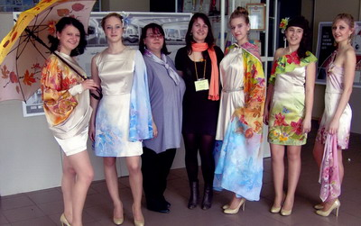

Архив новостей
«Золотая линия» Ларисы Могилевцевой
Далеко не все детские мечты становятся реальностью. Но тот, кто упорно идёт к цели, не сворачивая с пути и не изменяя мечте, в конце концов, оказывается счастливее других. Потому что в жизни очень важно делать то, что любишь, к чему лежит душа.
Тарусянка Лариса Могилевцева, в недавнем прошлом выпускница городской общеобразовательной школы № 2, а ныне студентка IV курса Российского государственного университета туризма и сервиса, - из числа таких счастливых людей. О профессии дизайнера она мечтала с детских лет. Хотелось создавать красивую женскую одежду – такую, чтобы у всех, кто её видел (и тем более носил), было радостно на душе. После уроков бегала в СТК на занятия к Галине Леонидовне Бельковой, с увлечением придумывала, конструировала и шила мягкую игрушку. Первой самостоятельно сшитой вещью был простой кухонный фартук – Лариса хорошо помнит его до сих пор…
Факультет «Технология и дизайн» поэтому был выбран ею не случайно. Учиться нравилось, интерес к будущей профессии с каждым новым курсом нарастал. Уже хотелось делать самостоятельные шаги, тем более, что задумки были, но поначалу слегка робела. В конце концов решилась принять участие в конкурсе молодых дизайнеров «Золотая линия», который ежегодно проводит университет. Конкурс непростой, международный, где одних участников – не меньше полутора сотен! Попасть в их число, также задача не из лёгких; помимо оригинальной идеи, необходимо было хорошо потрудиться над её воплощением, подчеркнув индивидуальность и новизну задуманного, ведь выбор номинации («Мода от кутюр») требовал поистине творческого озарения и горения.
Лариса решила создать для конкурсного показа коллекцию лёгких женских платьев в технике батик. Идея была прекрасной, но слегка авантюрной – батиком начинающий дизайнер до этого никогда не занималась, надеялась на помощь опытной наставницы – педагога Тарусского Дома детского творчества Марины Владимировны Коноваловой.
Коллекция носила название «Времена года», в соответствии с этим на ткань должен быть нанесен и рисунок – холодный зимний, нежный весенний, яркий летний, лиричный осенний. Ткань Лариса выбрала самую что ни нас есть женственную – шифон, а конструкцию платьев – наиболее простую, не утяжелённую отвлекающими от главного – рисунка – элементами.
Вышло так, что на конкурсе Лариса Могилевцева оказалась своего рода первооткрывателем моделей одежды из батика. Они были замечены и отмечены конкурсной комиссией, что для дебюта, несомненно, вполне достаточно – не стоит забывать, какого уровня был сам конкурс! Демонстрировать коллекцию дизайнеру из Тарусы помогали Люба Морозова, Елизавета Коновалова, Надежда Картавина, Дарья Смирнова и однокурсница Ларисы Елена Казина.
К тому, чтобы показать достигнутое мастерство и умение, Лариса шла целых четыре года, а сам показ длился не более пяти минут… Но было бы обидно и несправедливо просто повесить в шкаф поистине замечательные творения собственных рук, тем более, что на улице весна, солнце, благоухание природы! И приближавшийся дорогой для всех праздник – День Победы. На праздновании Дня Победы и смогли увидеть тарусяне конкурсную коллекцию «от кутюр» дизайнера Ларисы Могилевцевой, оценив её по достоинству.
Информация предоставлена редакцией районной газеты "Октябрь"
Статья - З. Виноградова